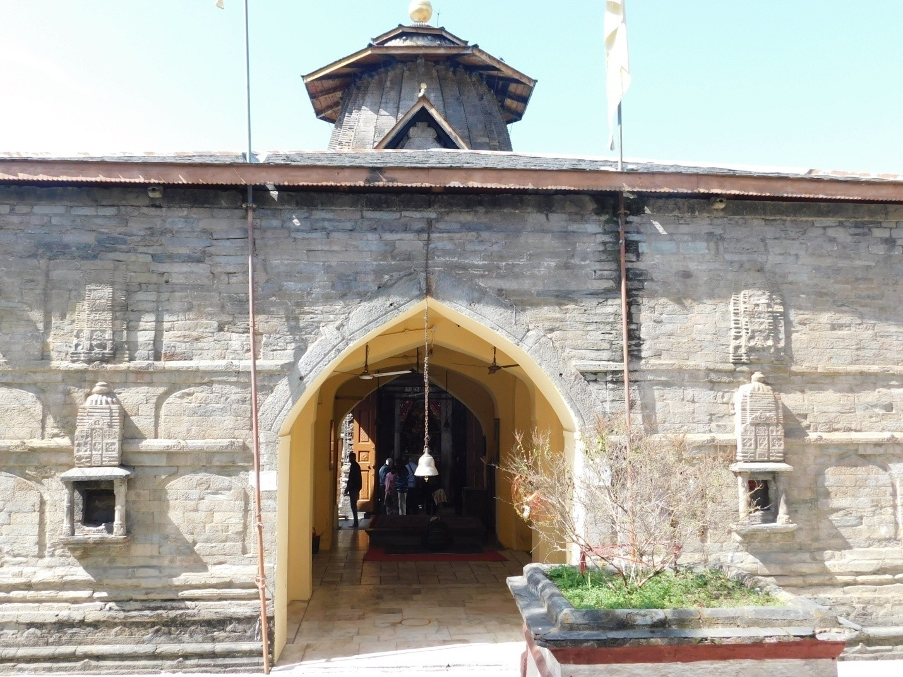
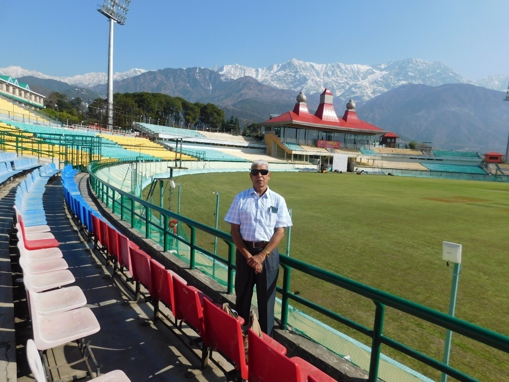
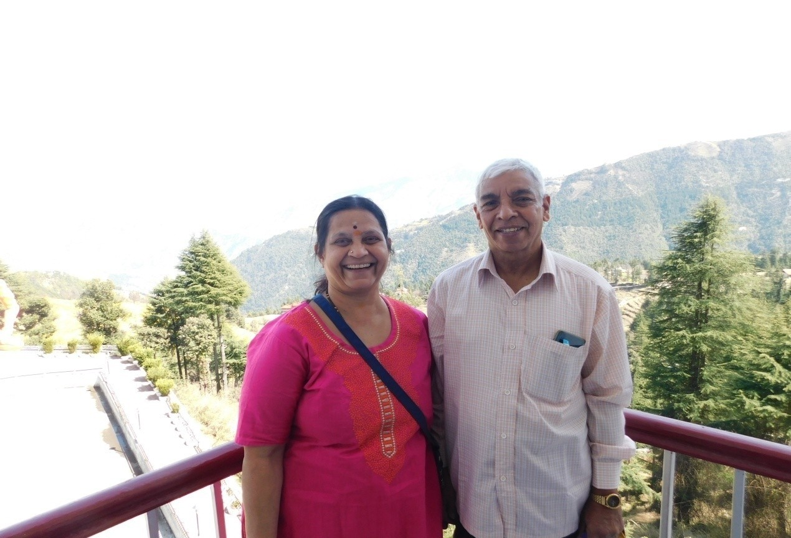
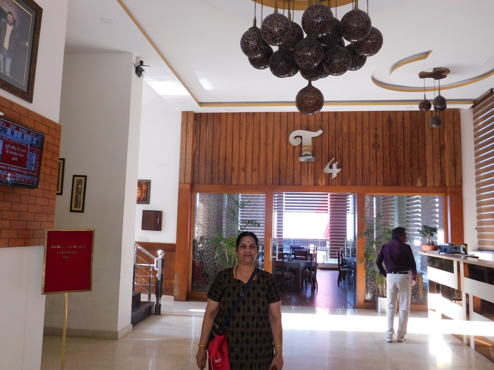
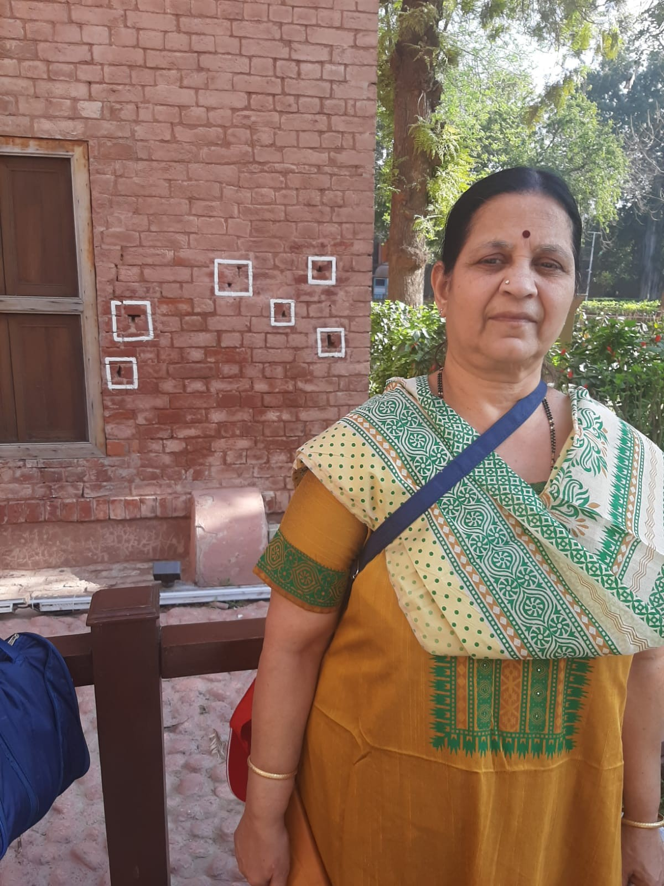
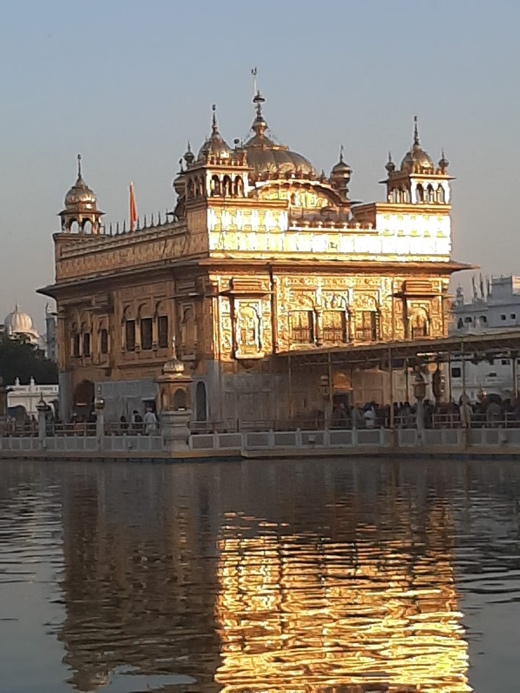
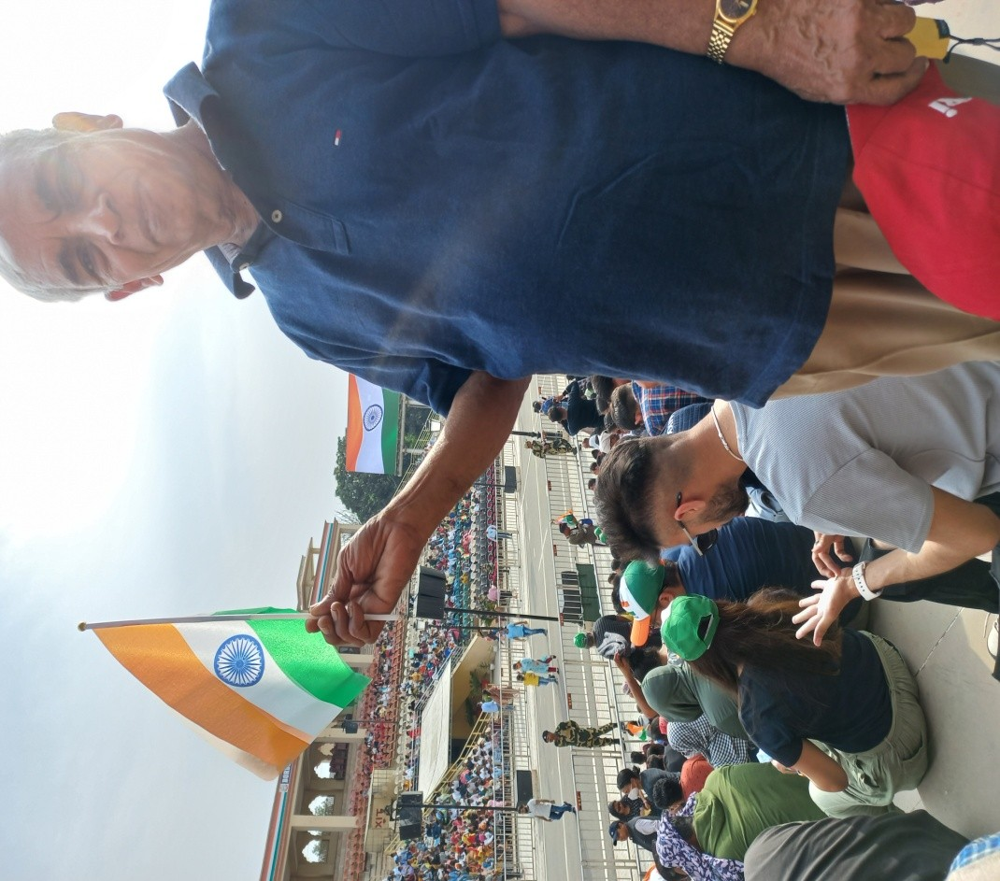
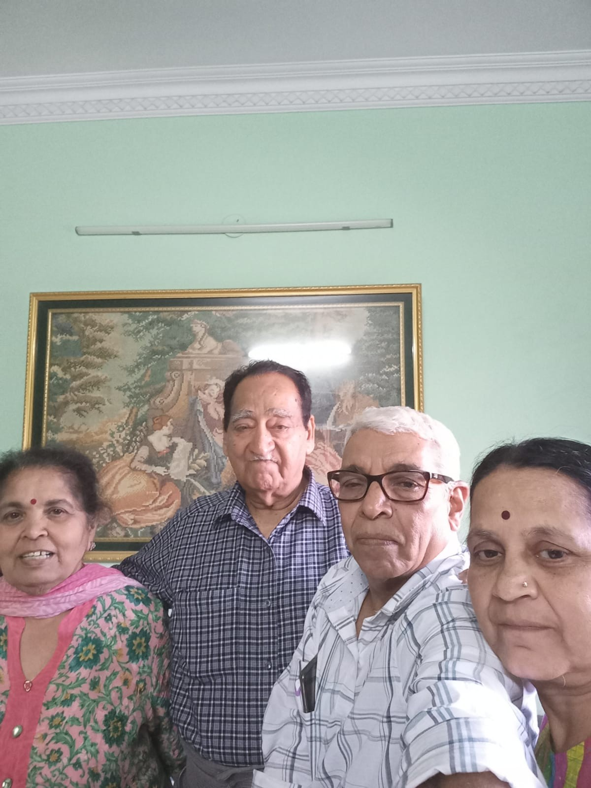
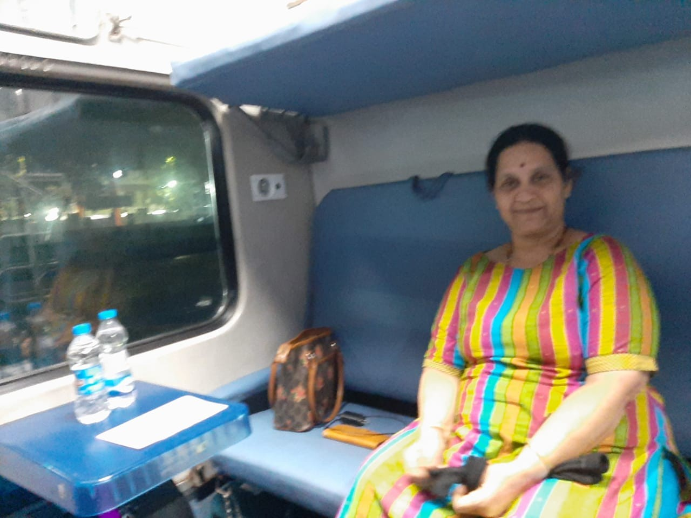

On 7th March 2022 at 4:30 am, we left home via a booked cab. We reached Mumbai Airport (Terminal 1), also called the Domestic Airport, around 7:30 am. Flight to Amritsar was on time. Travel time from Mumbai to Amritsar is around 2 hours. We reached Amritsar at 1:15 pm, where a Kesari representative was waiting at the airport.
We boarded the bus around 2 pm. The weather was not hot. Dalhousie is 210 km from Amritsar. In the bus, there were no curtains, no music system, and no TV; these are the stipulations of Punjab state. Kesari arranged lunch at a hotel on the way, and the food was good. In this group, there were only 20 people, mostly Maharashtrians. We were the last two to join and had to sit at the rear side of the bus, but still, the journey was not bad.
After lunch, we proceeded to Dalhousie. From Pathankot, the ghat road starts. Pathankot is in Punjab, and Dalhousie is in Himachal Pradesh. Being a ghat road, the journey from Pathankot to Dalhousie took 4 hours, despite being only 70 km away. We reached Dalhousie around 9 pm.
Dalhousie was quite chilly, and the ambient temperature was below 10°C. We were accommodated in Indraprastha Resort. The hotel and environment were good. After the room allotment, we had our dinner, which was delicious. The room was quite spacious and warm. Because of the long travel, we were tired, and the comfortable room ensured we had a sound sleep.
In Himachal Pradesh, roads are narrow. I find the drivers here to be very skilled; despite the narrow roads, hairpin bends, and the lack of parapet walls over the edges, they still manage to drive even big trucks and buses. Kesari arranged cabs for visiting places instead of the bus. After a heavy breakfast, we left the hotel and proceeded to Chamba Valley, which is around a 2-hour travel. We visited the Lakshmi Narayan Temple.

Then we proceeded to Khajjiar. On the way, we had our lunch. Khajjiar is a place surrounded by mountains with a small lake. In winter, the mountains are covered by ice and it looks like Switzerland, so this place is called "Mini Switzerland." There is also a Naga temple. We spent an hour here. Lakshmi may never forget this place; as we wanted to walk around the lake, the lawn was pretty wet and slippery. She slipped and suffered minor internal damage to her wrist, and the pain troubled her throughout the trip. After returning to Pune, she had to see a physician for treatment. After that, we headed back to the hotel, taking a 15-minute coffee break on the way.
After breakfast, we left Dalhousie. Dharamshala is quite far from Dalhousie. Being a ghat road, it took about 9 hours. On the way, after lunch, we visited the Jwala Mukhi Temple. This is one among the 52 Shakti Peethas. Fortunately, there was no crowd, so we could properly see the temple. Here, we saw flames coming from holes in the rock in three different places. We also saw the golden "chhatri" presented by Akbar the Great. After the temple visit, we proceeded to Dharamshala, reaching the Angel Inn hotel around 7 pm.
Our stay in Dharamshala was at the Angel Inn, which was quite good and the food was pleasant. After breakfast around 9 am, we left the hotel and proceeded to the Dharamshala Stadium.

It is about 30 minutes away. The stadium, with the background of Himalayan mountains covered in ice, looks beautiful.Next, we went to the Aghanjar Mahadev Mandir.

It is a beautiful temple surrounded by waterfalls, rocks, and trees. We spent quite some time enjoying the natural surroundings. We then returned to the hotel for a lavish dinner; a special item was the cashew nut and bitter gourd (karela) sabji. Afterward, we visited the Bhagsunag Temple and the Dalai Lama Monastery. We were later dropped at the McLeod Ganj market before returning to the hotel.
At 7 am, we had our breakfast and proceeded to Amritsar. It is some 200 km away, taking about 6 hours with two breaks for tea. Around 2 pm, we reached Amritsar and were accommodated in a humble hotel 5 km away from the railway station. After lunch, we left the hotel by auto-rickshaw to see Jallianwala Bagh.

We spent an hour visiting the galleries and the well where people jumped in to save themselves from gunshots, but died.After this infamous place, we went to the Golden Temple.

There was a big crowd. Masks were strictly prohibited. Without masks, we stood for an hour in that crowd. To add to the tension, a neighboring Sardarji was sneezing constantly. At last, we entered the sacred place where prayer was going on continuously. Then we came out of the dome and spent an hour sitting on the premises taking pictures. On the way to the auto stand, we had a very delicious Lassi from a shop. Then we visited the Gobindgarh Fort, where a light show depicted the history of Punjab before independence. After the show, we returned to the hotel for dinner.
Since morning there was no program we got up late. After the breakfast we roam around hotel. After lunch we left hotel and proceeded to see India Pakistan border. Atari is the village of India which is on the Border. Wagah is a village of Pakistan. Every evening both armies participate in their territories parades, and lowering their flags at sunset time. We witnessed this famous program some 20 years back through southern travels.
After this event we went to Sadda Pind, where Punjabi village culture is exhibited. They also serve food in typical village style. This was the last program of the tour. The food and exhibits were okay, but we felt the entrance fee of Rs 700 per head was too costly.

We got up leisurely around 7 am, went for a morning stroll, and had breakfast. Around 11 am, Shri RP Khanna came to the hotel. He was so happy to receive us, and we went to his home. Mrs. Khanna was equally happy to greet us. He is nearing 80, and because of a spinal problem, he finds it difficult to walk. Despite his health ailments, he came all the way to the hotel to receive us. We talked continuously about old memories and ate until 2 pm. Then we had lunch which he ordered from a hotel. After tea, he dropped us at the station around 5 pm. In the whole tour, the time we spent with them is most precious to me. He was my boss, and his affinity towards us is great.
We took the Golden Temple Express to Nizamuddin from Amritsar. The train was on time. Because of the heavy late lunch, we skipped dinner.

Reached Nizamuddin around 4 am. With the help of a porter, we reached the right platform to board the Duronto to Pune. The train was on time and departed at 6:15 am. This train was so cool—no crowd and no stoppages in between. We were constantly given things to eat and drink. Next day early morning around 3 am, we reached Pune. Overall, the trip was quite enjoyable.
Reflections on the Journey
This trip was a beautiful tapestry of spiritual fervor, historical gravity, and the enduring warmth of old friendships. From the winding, parapet-less roads of the Himachal ghats to the golden glow of Amritsar, the journey tested our endurance but rewarded us with breathtaking views of the Dhauladhars and the sacred flames of Jwala Mukhi. While the physical toll was felt—especially by Lakshmi in Khajjiar—the spirit remained high. The highlight, however, wasn't a monument, but the precious hours spent with Shri RP Khanna, proving that the best part of travel is often the people we reconnect with along the way.